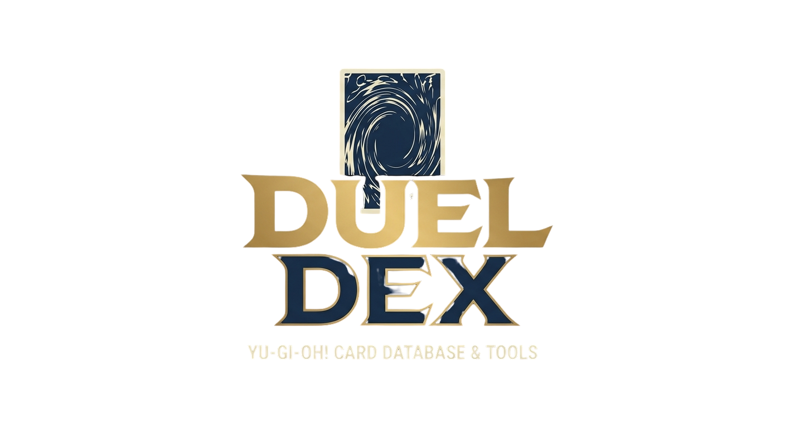

Atributo
Trevas
Luz
Fogo
Água
Terra
Vento
Divino
Tipo
Monstro Normal
Monstro de Efeito
Monstro de Fusão
Monstro Sincro
Monstro XYZ
Monstro Link
Monstro Pêndulo
Monstro Ritual
Mágica
Armadilha
Nível
★1
★★2
★★★3
★★★★4
★★★★★5
★★★★★★6
★★★★★★★7
★★★★★★★★8
★★★★★★★★★9
★★★★★★★★★★10
11
12
Limpar
Buscar
Favoritos
Todos
Decks
Anterior
Página 1 de 1
Próximo